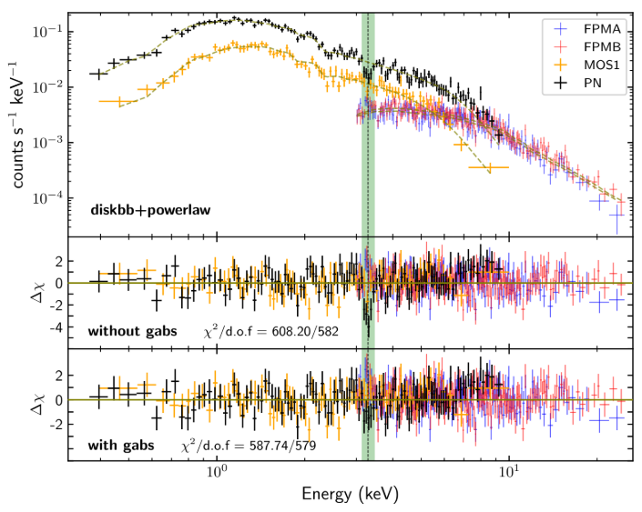
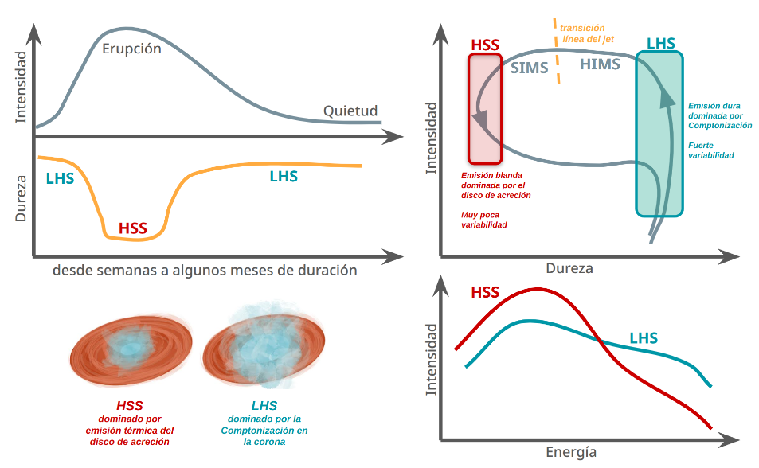
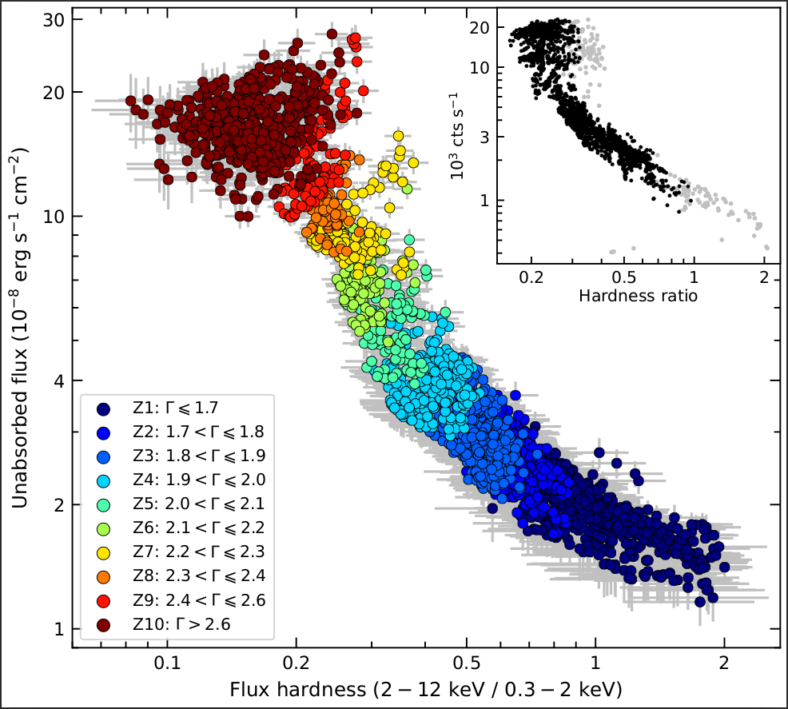
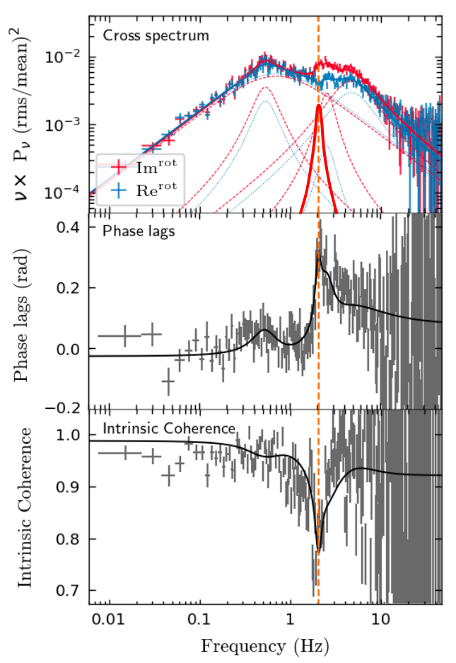
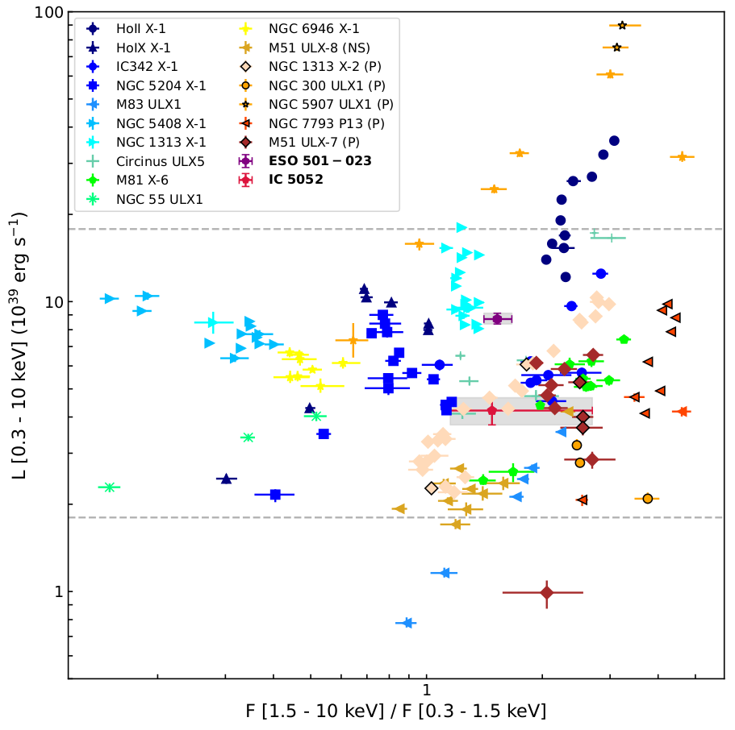
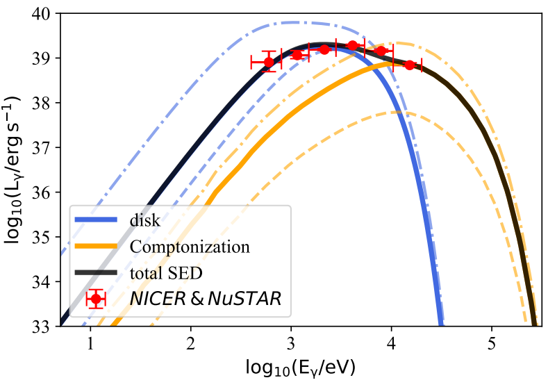
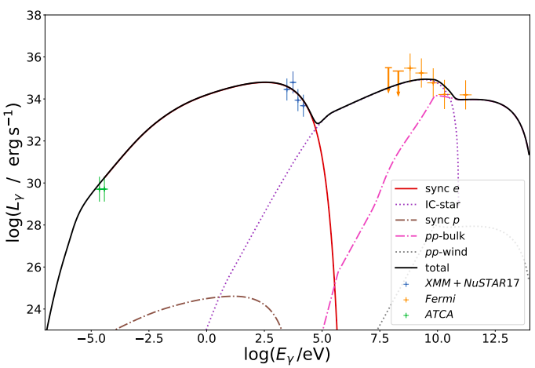
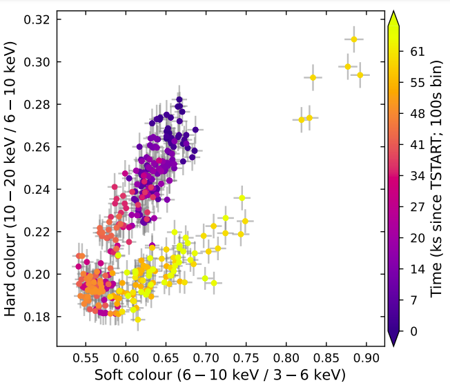
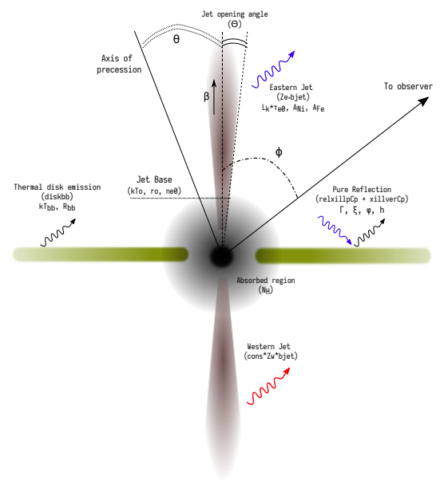
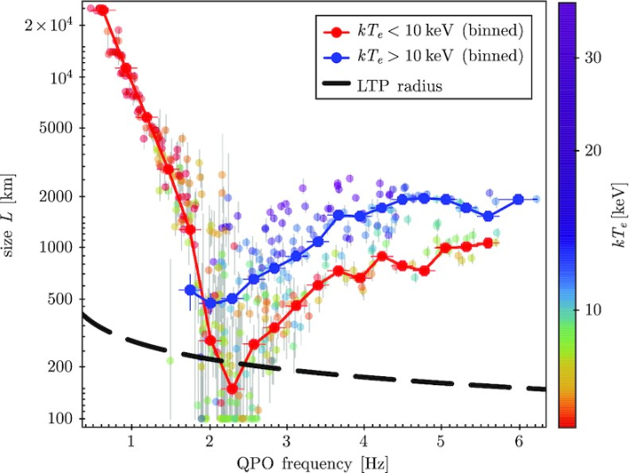

Instituto Argentino de Radioastronomía (IAR-CONICET-CICPBA-UNLP)
binarias de alta y baja masa; catálogos; acreción/eyección; variabilidad; análisis espectro-temporal; oscilaciones quasi-periódicas; sistemas altamente absorbidos; microcuásares; púlsares; agujeros negros.
emisión térmica; abundancias químicas; choques; aceleración de partículas; emisión sincrotrón; emisión de radio continuo y de rayos gamma.
Formación y evolución de binarias de rayos X de alta masa; conexión con sgHMXBs y SFXTs; impulsos de estrellas de neutrones; progenitores de objetos compactos en sistemas binarios; fusiones que generan ondas gravitacionales

Las fuentes de rayos X ultraluminosas (ULX) desafían constantemente los límites de nuestro conocimiento sobre la astrofísica extrema. Estas fuentes, situadas en las periferias de galaxias cercanas, emiten niveles de radiación que superan por mucho el límite de Eddington de los agujeros negros de masa estelar convencionales. Aunque su naturaleza inusual hizo que inicialmente se las clasificara como esquivos agujeros negros de masa intermedia, el histórico descubrimiento de pulsaciones de rayos X en varias ULX reveló que muchos de estos motores cósmicos son, en realidad, estrellas de neutrones. Para explicar cómo alcanzan estos regímenes de acreción súper-Eddington tan extremos, los modelos suelen recurrir a un intenso colimado geométrico, a campos magnéticos colosales o a una combinación de ambos; sin embargo, ha resultado sumamente difícil hallar evidencia observacional directa de dichos campos en la superficie de las ULX. En este trabajo, presentamos un estudio observacional fundamental de estos entornos extremos: tras analizar el espectro de rayos X de la fuente NGC 4656 ULX-1, detectamos una marcada y estrecha característica de absorción en torno a los 3.29 keV, además de un sólido candidato a pulsación a 0.97 Hz. Luego de contrastar rigurosamente este rasgo con distintos modelos de continuo y confirmar su significancia estadística, interpretamos dicha absorción como una línea de resonancia ciclotrónica de protones. Este hallazgo es crucial, ya que sugiere la presencia de un campo magnético local extremadamente intenso cerca de la superficie de la estrella de neutrones. Al ser este apenas el segundo caso de una estrella de neutrones ULX donde se detecta algo así, nuestros resultados aportan evidencia directa y contundente sobre el vínculo entre los campos de tipo magnetar y los regímenes súper-Eddington observados en las ULX.

En los sistemas binarios de rayos X, la acreción sobre objetos compactos genera emisión variable en un amplio rango de frecuencias. Este trabajo examina la fenomenología de dicha acreción, donde la emisión térmica del disco es procesada mediante Comptonización en una corona de electrones calientes.
A través de técnicas de análisis de Fourier, los estudios espectro-temporales permiten medir retardos y coherencia de la señal, revelando información crucial sobre la geometría del flujo y la propagación de la radiación en campos gravitatorios intensos. En este Artículo& Invitado del Boletín de la Asociación Argentina de Astronomía se presentan resultados recientes derivados del desarrollo de un modelo de Comptonización dependiente del tiempo, fundamental para inferir las propiedades físicas del material acretado.

Las observaciones de NICER de Cygnus X-1 revelan un tipo de QPO de clase C que no había sido detectada previamente, el cual se manifiesta principalmente en la parte imaginaria del espectro cruzado. Esta "QPO imaginaria" aparece exclusivamente en estados intermedios y coincide con la transición de decaimiento de estado blando a duro que suele observarse en los estallidos de binarias de rayos X de baja masa (LMXB). Se presenta como una caída en la coherencia y un marcado aumento de los retardos en el rango de ~1-6 Hz, lo que requiere de una Lorentziana estrecha con un retardo amplio para su explicación. Sus propiedades guardan una estrecha relación con las QPOs de clase C confirmadas en las LMXB MAXI J1348-630 y MAXI J1820+070, lo que sugiere que este tipo de oscilaciones podrían ser más frecuentes en agujeros negros en acreción de lo que se creía hasta ahora. Estos resultados resaltan la eficacia de las técnicas en el dominio de Fourier para descubrir componentes de variabilidad ocultos y sugieren una conexión más profunda entre los agujeros negros en binarias de alta masa (HMXB) y los de baja masa (LMXB).

Durante la transición de estado blando a duro de MAXI J1820+070, observamos un cambio abrupto en los retardos y una estrecha caída en la coherencia. A esa misma frecuencia, detectamos una QPO "imaginaria" que explica las características observadas y cuyas propiedades se asemejan a las de las QPO de clase C. Aunque esta QPO permanece oculta en los espectros de potencia, la misma sale a la luz al analizar el espectro cruzado. El estudio de la evolución de la QPO imaginaria aporta nuevas claves sobre este estado de los agujeros negros, el cual rara vez ha sido observado.

Presentamos un análisis espectral y temporal de dos ULX en ESO 501-023 e IC 5052 utilizando datos de XMM-Newton y NuSTAR. No se detectaron pulsaciones (PF < 11%). Ambas fuentes exhiben espectros típicos de las ULX, bien descritos por dos componentes térmicas más una cola de comptonización de alta energía. Basándonos en la comparación con una muestra de ULX conocidas, clasificamos a ESO 501-023 en un estado térmico y a IC 5052 como una ULX de estado duro. Nuestros resultados sugieren que ambos sistemas son, probablemente, objetos no magnéticos que experimentan una acreción supercrítica impulsada por sus estrellas compañeras.

Investigamos a NGC 4190 ULX-1, una fuente de rayos X ultraluminosa, utilizando datos de XMM-Newton, NICER y NuSTAR. A través de análisis temporales y espectrales, no logramos detectar pulsaciones. El espectro de la ULX, que se asemeja a la emisión típica de estos objetos, sugiere la presencia de un agujero negro en régimen súper-Eddington, posiblemente oscurecido por un viento denso, con mecanismos de emisión explicados por colimado geométrico y comptonización.

Estudiamos la binaria 4FGL J1405.1-6119, una emisora de rayos gamma de alta masa, mediante el uso de NuSTAR y XMM-Newton. Para explicar su distribución espectral de energía, empleamos un escenario de chorro lepto-hadrónico parabólico y ligeramente relativista, lo que sugiere que 4FGL J1405.1-6119 podría ser un microcuásar supercrítico similar a SS433.

Estudiamos la binaria de estrella de neutrones GX 13+1 con NuSTAR, detectando su transición desde el estado normal hacia estados eruptivos. El análisis espectral reveló evidencia de reflexión relativista, lo que permitió restringir el radio interno del disco y la intensidad del campo magnético. Asimismo, se detectó un viento caliente con absorción fotoionizada de Fe y Ni. El estudio sugiere la presencia de altas densidades electrónicas en el disco de acreción, lo que cuestiona los modelos previos e impacta nuestra comprensión de las condiciones físicas de GX 13+1.

Estudiamos el famoso microcuásar SS433 a través de 10 observaciones de NuSTAR que abarcan casi dos ciclos de precesión del sistema. Mediante una combinación de un chorro leptónico térmico y reflexión relativista de un disco de acreción, hallamos que el movimiento de precesión del sistema explica satisfactoriamente la modulación observada en diversos parámetros espectrales.
Presentamos un modelo de Comptonización variable que explica las oscilaciones cuasi-periódicas (QPO) de baja frecuencia en binarias de rayos X de baja masa (LMXB) con agujeros negros. Al modelar el disco de acreción como un cuerpo negro de múltiples temperaturas, lo comparamos con un modelo de cuerpo negro esférico. La aplicación de nuestro modelo a diversas LMXB (como MAXI J1348-630 y GRS 1915+105) muestra mejores ajustes y compatibilidad, lo que confirma su capacidad para reproducir las características de la QPO.
El modelo se encuentra disponible de forma abierta en GitHub.

Exploramos el papel de los procesos de Compton inverso en la formación de los espectros de rayos X en binarias de baja masa con agujeros negros, centrándonos en GRS 1915+105. Nuestro modelo de Comptonización espectro-temporal, aplicado a 398 observaciones, revela tendencias constantes en las propiedades de la corona a lo largo de 15 años. Al vincular estos resultados con el monitoreo de radio a 15 GHz, proponemos que las interacciones entre el disco y la corona influyen en el lanzamiento del chorro observado en ondas de radio.